Is the Universe a Computer?
On Turing machines, simulated universes, and the physics of information.
February 22, 2026 · Universe, Complexity, Information

A note before we start. I'm not a physicist nor a philosopher. This article grew out of ideas I keep bumping into when reading essays, science blogs, and science fiction novels. Simulation theory in Bostrom. Computronium in Hitchhiker's Guide. Digital physics in Wolfram. Each time I'd pull on one thread, it connected to three others. So I decided to sit down and trace the whole web.
This is meant to be provocative, not authoritative. I've done my best to get the science right and to link to primary sources, but at the end of the day I'm just a curious reader. If something here makes you want to dig deeper, that's the whole point.
Right now, your phone is doing something simple. It's flipping tiny switches between 0 and 1. Billions of them, billions of times per second. Every photo you've taken, every message you've sent, every video you've watched. All of it is switches.
But here's a question that sounds crazy until you think about it: what if the universe is doing the same thing?
Not metaphorically. Literally. What if the laws of physics are just rules, space is made of tiny discrete chunks, and reality itself is a computation running on some invisible substrate?
This isn't science fiction. Real physicists, mathematicians, and philosophers have been asking this question for decades. Some think the answer is yes. Some think it's nonsense. Nobody knows for sure.
Let's walk through the argument. From the beginning.
Act I. What even is computation?
Before we ask whether the universe is a computer, we need to ask a simpler question: what is a computer?
Not your laptop. Something more basic.
A thermostat computes. It reads the temperature (input), checks a rule (is it below 20°C?), and does something (turns on the heat). Input, rules, output. That's computation.
A row of dominoes falling is computation too, in a very dumb way. Each domino "reads" whether the previous one hit it and "decides" to fall or not.
In 1936, a mathematician named Alan Turing asked: what is the simplest possible machine that can compute anything? Not just temperature or dominoes, but ANY calculation.
His answer: a machine with a tape (like a long strip of paper divided into cells), a read/write head that moves along the tape, and a set of rules. The rules tell the machine: "If you're in state A and you see symbol X, write symbol Y, move one step left, and switch to state B." That's it.
He called it a "universal computing machine." We call it a Turing machine. I suggest you to read “The Universal Computer: The Road from Leibniz to Turing” if you’re interested in learning more
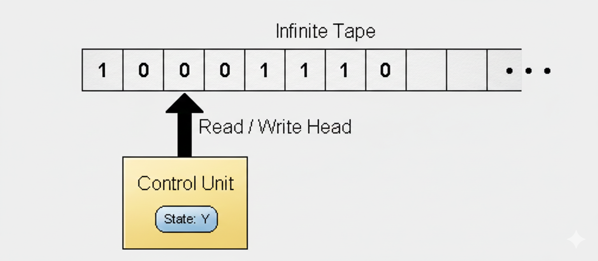
Here's the wild part. Turing proved that this absurdly simple device can compute ANYTHING that is computable. Period. Your iPhone, a $100 million supercomputer, a quantum computer. None of them can solve problems that a Turing machine can't. They solve them faster, sure. But there's no problem they can crack that a Turing machine can't, given enough time and tape.
This property, being able to simulate a Turing machine, is called Turing completeness.
If a system is Turing-complete, it can run any algorithm. Any step-by-step procedure with a definite answer. It's a universal computer.
A Turing machine is defined by:
- A finite set of states (modes the machine can be in)
- A finite alphabet of symbols (what can be written on each tape cell)
- A transition function: given the current state and the symbol under the head, it specifies (1) a new symbol to write, (2) a direction to move (left or right), and (3) a new state to enter
- A start state and one or more halt states
A universal Turing machine can simulate any other Turing machine. You feed it a description of another machine as input on the tape, and it runs that machine. It's a programmable computer, defined on paper in 1936, before any electronic computer existed.
A system is Turing-complete if you can build a universal Turing machine within it. This means it can run any algorithm. What it can't do is solve problems that no algorithm can solve (see: the Halting Problem below).
Turing also proved something negative: there are problems no machine can ever solve.
The most famous one: given a program and an input, will the program eventually stop (halt), or will it run forever?
Turing proved by contradiction that no general algorithm can answer this for all possible programs. If such an algorithm existed, you could build a paradoxical program that halts if and only if it doesn't halt. Contradiction.
This is not an engineering limitation. It's a logical one. No amount of hardware, no future technology, no quantum computer will ever solve the Halting Problem in general. Computation has hard, mathematical walls.
What about quantum computers?
People often say quantum computers are "more powerful" than regular computers. That's true, but only in a specific way.
A quantum computer can solve certain problems much faster than a classical one. Factoring huge numbers, for example (Shor's algorithm).
But a quantum computer cannot solve any problem that a classical Turing machine can't solve at all, given enough time.
It's like the difference between a sports car and a bicycle. Both get you from A to B. The car is way faster. But there's no destination the car can reach that the bicycle can't, eventually.
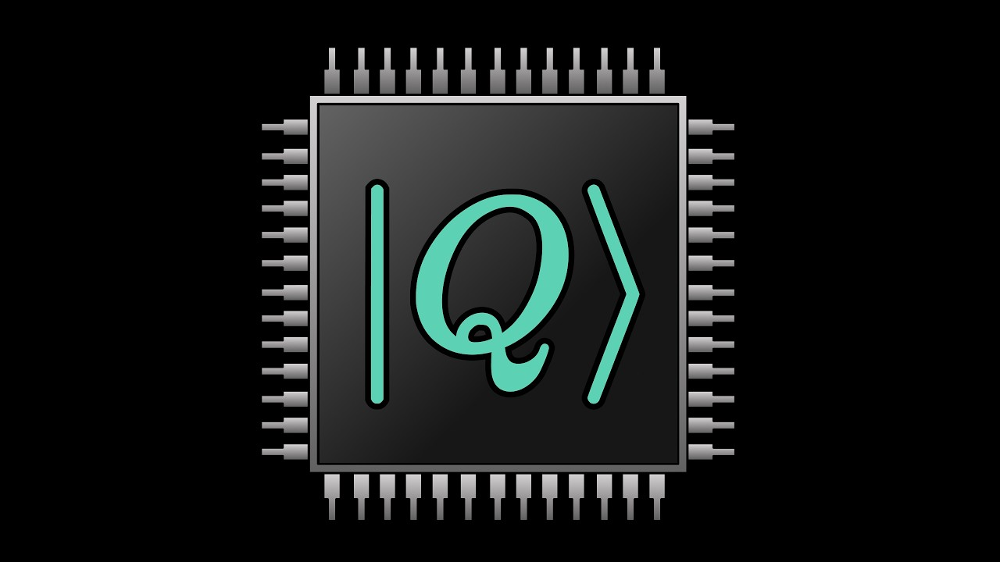
In 1985, physicist David Deutsch formulated this more precisely as the Church-Turing-Deutsch principle: any physical process can be simulated by a universal computing device. A quantum Turing machine is still a Turing machine. It uses quantum tricks for speed, but the set of solvable problems stays the same.
The distinction matters.
- Computability asks: can you solve it at all?
- Complexity asks: can you solve it fast enough to matter?
Computer scientists classify problems by how their difficulty scales with input size.
P = problems solvable in "polynomial time." As input grows, the time needed grows at a manageable rate (n², n³, etc.). Sorting a list is in P.
NP = problems where a proposed solution can be checked quickly (polynomial time), even if finding it might be slow. Sudoku is NP: checking a filled grid is fast, but solving one from scratch can be slow.
The biggest open question in computer science: is P = NP? Can every problem whose solution is easy to check also be easy to find?
Most experts believe P ≠ NP. If it turned out P = NP, modern cryptography would break, since encryption relies on certain problems being hard to solve but easy to verify.
Quantum computers add a wrinkle. They sit in a complexity class called BQP (bounded-error quantum polynomial time). A decision problem is a member of BQP if there exists a quantum algorithm that solves the decision problem with high probability and is guaranteed to run in polynomial time.
BQP includes some problems not known to be in P (like factoring), but nobody has proven BQP contains all of NP. The exact relationship between P, NP, and BQP remains one of the deepest open questions in science.
Act II. Computation shows up in the strangest places
Here's where things get weird. Turing completeness isn't rare. It shows up all over the place, in systems nobody designed to be computers.
Microsoft Excel is Turing-complete. With enough cells and formulas, you can build a universal Turing machine in a spreadsheet. People have done it!
Minecraft is Turing-complete. Players have built working computers inside the game using redstone circuits, complete with arithmetic logic units.
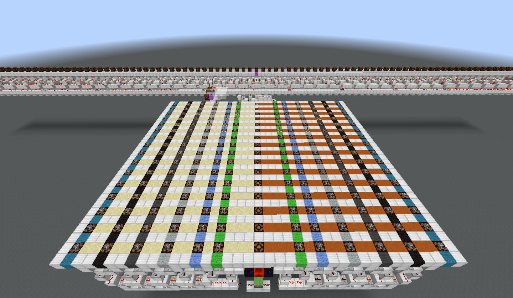
But the most mind-bending example is a card game.
Magic: The Gathering is a universal computer
In 2019, researchers Alex Churchill, Stella Biderman, and Austin Herrick published a paper proving that Magic: The Gathering is Turing-complete. Not a simplified version. The actual game, with standard tournament-legal decks.
They encoded a Turing machine using game mechanics. The tape is represented by creature tokens on the battlefield: green tokens for cells to the left of the read head, white tokens for cells to the right. Each token's power and toughness (which are always equal) encode that cell's distance from the head, while the creature type encodes the symbol written on that cell. The machine's states and transition rules are encoded through the triggered abilities of specific cards , which fire automatically based on what happens on the board.
The key result: once the board is set up, all moves of both players are forced. The game runs on its own, step by step, executing the Turing machine. And the outcome is equivalent to the Halting Problem. No algorithm can determine who wins. Not a slow algorithm. None at all.
This makes Magic the most computationally complex real-world game ever studied. Not just hard. Literally undecidable.
Chess is hard. It would take longer than the age of the universe to search all possible games. But in principle, a computer could play perfect chess with enough time and memory. Chess is computable.
Magic: The Gathering is different. The 2019 paper showed that determining who wins, even when neither player has any choices left, is equivalent to the Halting Problem. No algorithm can solve it in general. Not a slow one. Not a fast one. None.
This is a category difference, not a speed difference. Chess is on one side of the computability line. Magic is on the other side entirely.
Blockchains: a tale of two designs
This idea of Turing completeness has real practical consequences beyond games.
Bitcoin uses a scripting language called Bitcoin Script to handle transactions. When someone sends you bitcoin, the transaction includes a locking script: a set of conditions that must be met to spend those funds (typically: provide a valid digital signature matching a specific public key). When you spend, you provide an unlocking script that satisfies those conditions.
Bitcoin Script is deliberately NOT Turing-complete. It has no loops, no recursion. You can't write arbitrary programs with it. This was a design choice by “Satoshi Nakamoto”. By keeping the language limited, Bitcoin stays predictable, secure, and resistant to abuse. Nobody can write a Bitcoin script that loops forever and crashes the network.
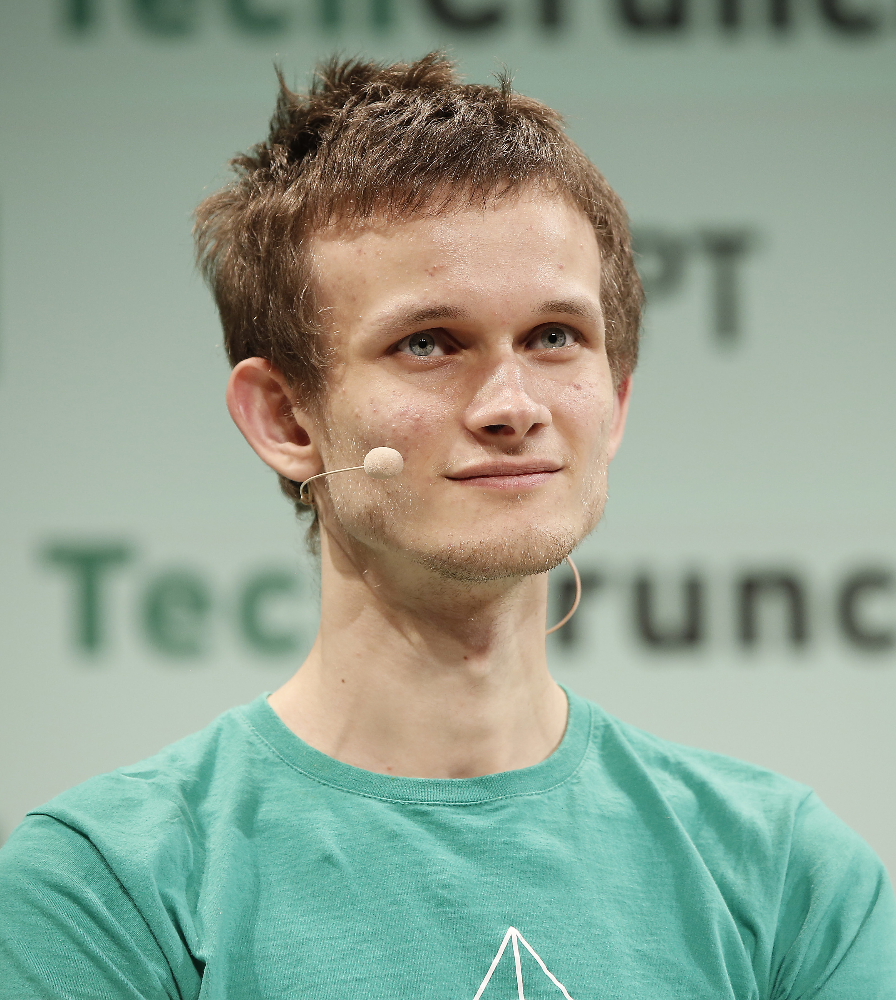
Ethereum took the opposite approach. Vitalik Buterin designed Ethereum's Virtual Machine (the EVM) to be Turing-complete. You can write arbitrary programs in Solidity (Ethereum's programming language) and deploy them as smart contracts. This is what makes DeFi, dApps, and all the programmable money stuff possible.
But there's a problem. A Turing-complete system can run programs that loop forever. That's literally what the Halting Problem tells us. On a blockchain, one infinite loop could freeze the entire network.
Ethereum's solution is clever: every computation costs gas, which is real money (ETH). You set a gas limit for each transaction. If your program doesn't finish before the gas runs out, it stops.
So is Ethereum Turing-complete? Technically yes, given an infinite gas budget. In practice, every computation has a hard economic ceiling. You could call it "Turing-complete with a kill switch." It's an economic solution to a theoretical problem Turing identified in 1936.
The question that follows
So a card game can be a universal computer. A blockchain can be one. A spreadsheet can be one.
At this point you might start wondering: if computation keeps showing up everywhere, in systems nobody even designed to compute... what about the biggest system of all?
What about the universe? 🌌
Act III. The man who built the first computer, then asked if the universe is one

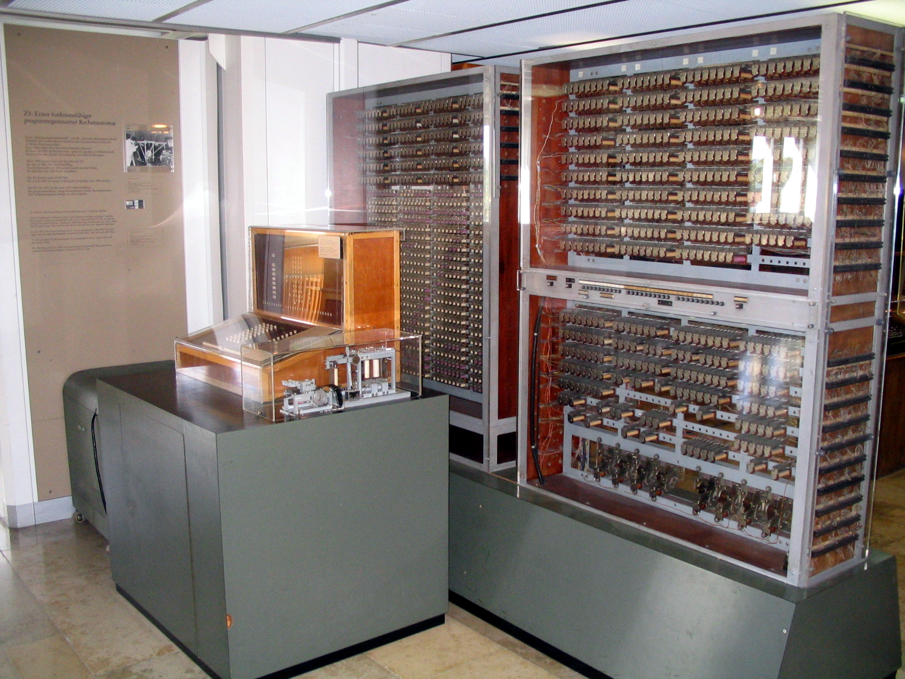
In 1941, a German engineer named Konrad Zuse built the Z3, widely considered the first programmable, fully automatic digital computer. He did it in his parents' living room in Berlin. While WWII bombs fell outside.
After the war, Zuse kept thinking about computation. But his thinking took a strange turn. In 1969, he published a short book called "Rechnender Raum" (Calculating Space). In it, he proposed something radical: the universe itself might be a giant cellular automaton.
A cellular automaton is a grid of cells. Each cell has a state (on or off). At each step, every cell updates its state based on the states of its neighbors. That's it. Simple rules, applied everywhere, simultaneously.
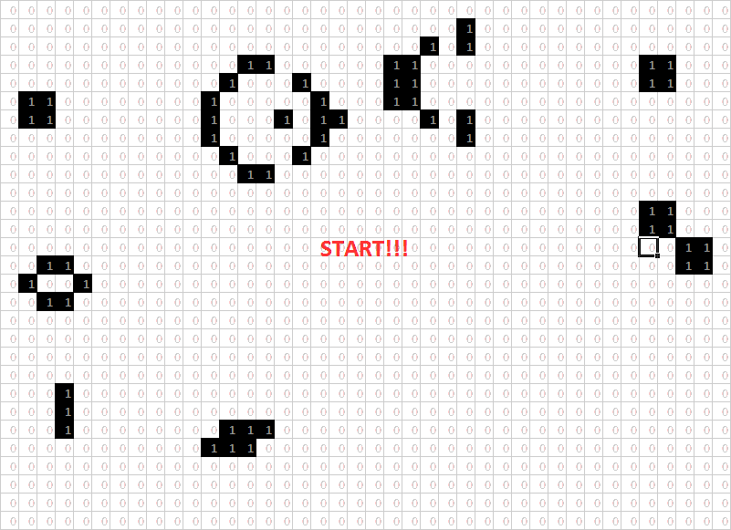
Here's a toy example to make this concrete. Imagine a row of ten light bulbs. Each one is either on or off. Every second, each bulb checks its two neighbors and follows one rule: "If exactly one of my neighbors is on, I turn on. Otherwise, I turn off."
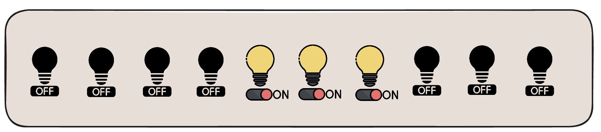
That's a computation! There's no keyboard. No screen. No programmer typing commands. Just states (on/off), rules (the neighbor rule), and time (the ticking seconds). The row of light bulbs is the computer. The pattern of lights is the output.
Zuse's claim was that the universe works the same way. Space is the grid. Particles are the states. The laws of physics are the update rules. And time is the ticking clock.
He didn't have the math to prove it. The idea was decades ahead of the tools available. But Zuse planted a seed that others would grow.
Act IV. A toy universe that proves the point
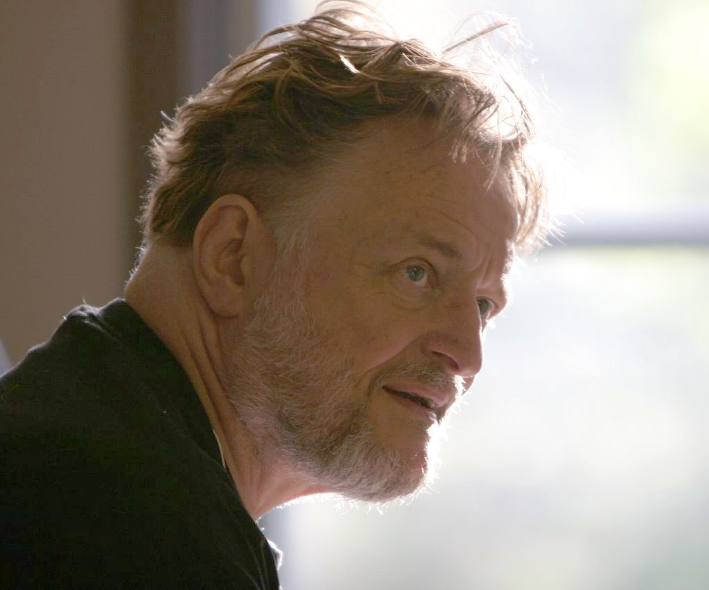
One year after Zuse's book, in 1970, mathematician John Conway invented the Game of Life.
It's a cellular automaton on a two-dimensional grid. Each cell is alive or dead. Every step, three rules apply:
- Birth: A dead cell with exactly three live neighbors becomes alive.
- Survival: A live cell with two or three live neighbors stays alive.
- Death: Everything else dies (loneliness or overcrowding).
That's the entire rulebook. Three rules.
What happens when you run it? Chaos. Beauty. Surprise. Play with it 👇🏻
Simple starting patterns evolve into gliders that walk across the grid. Self-replicating structures. Patterns that grow without limit. Martin Gardner wrote about it in Scientific American in October 1970, and it became one of the most studied mathematical objects.
But here's the punchline. Conway's Game of Life is Turing-complete. People have built working Turing machines entirely within it. Logical gates, memory, the works. A grid of cells following three dead-simple rules can run any computation your laptop can.
Think about what that means. You don't need silicon chips. You don't need wires. You don't need electricity. Three rules on a grid are enough to produce universal computation.
And the thing is, the laws of physics are also rules applied to a grid (well, to a space). They're more complicated than Conway's three rules, but the structure is the same. States. Rules. Time.
Zuse said the universe might be a cellular automaton. Conway showed a cellular automaton could be a universal computer. The logical chain is staring us in the face.
In the 1980s, Stephen Wolfram studied cellular automata systematically and discovered something unsettling: some systems are computationally irreducible.
This means there is no shortcut. The only way to find out what the system does after 10,000 steps is to run all 10,000 steps. No equation, no formula, no clever trick will let you skip ahead.
If the universe is computationally irreducible, then the universe is its own fastest simulator. No computer, no matter how powerful, can predict the universe's behavior faster than the universe itself produces it.
This has a strange implication: prediction would have fundamental limits, not because we lack data, but because reality itself is doing irreducible work.
Act V. But computation costs something real
So far this sounds abstract. Rules and grids and Turing machines. But now we need to talk about something physical. And to do that, we need to talk about energy.
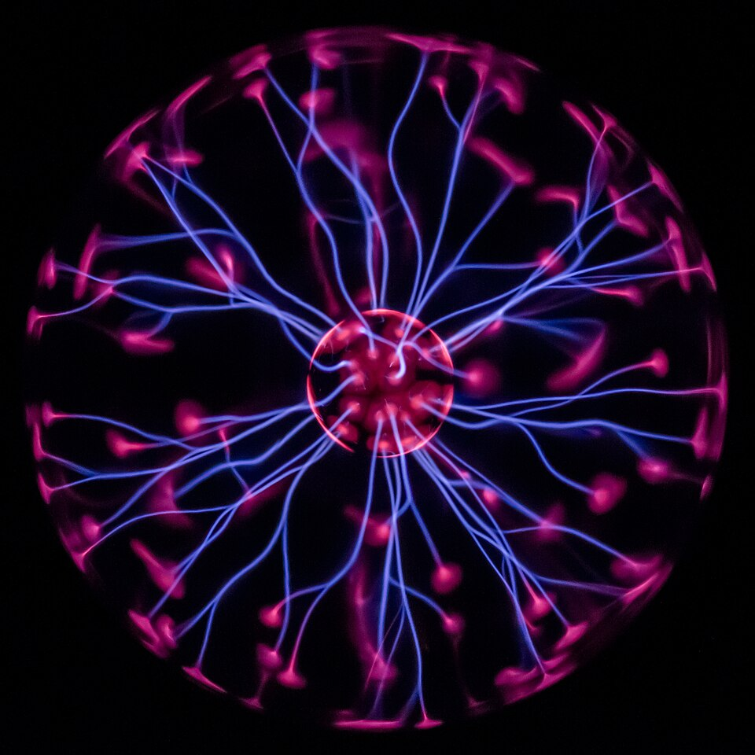
Energy is the ability to make something change.
If something moved, heated up, slowed down, lit up, or rearranged itself, energy was involved. A ball rolling down a hill has kinetic energy (energy of motion). A ball sitting at the top of a hill has potential energy (energy of position, waiting to be converted into motion). A hot cup of coffee has thermal energy (its molecules are jiggling around). A battery has chemical energy (atoms arranged in a way that can release energy when they rearrange).
The key insight for our story: energy is never created or destroyed. It only changes form. The ball's potential energy becomes kinetic energy. The battery's chemical energy becomes electrical energy. The coffee's thermal energy leaks into the room as heat. This is the first law of thermodynamics: energy is conserved.
Nothing is lost, nothing is created, everything is transformed.
There's also a second law: every time energy changes form, some of it becomes heat, and that heat spreads out. Things naturally go from ordered to disordered. A hot coffee in a cold room is a concentrated pocket of thermal energy. When it cools down, that energy doesn't disappear. It spreads into the air around it. The room gets very slightly warmer. The energy is still there, but now it's thinly smeared across a whole room instead of packed into one mug. It's become useless: you can't power anything with a room that's 0.00…1 degrees warmer.
This "spreading out" of energy is measured by a quantity called entropy, which always increases in a closed system. High entropy means energy is spread out evenly and can't do much work anymore. Low entropy means energy is concentrated somewhere and can still drive change.
Why does this matter for computation? Because computation involves changing states. Flipping a bit from 1 to 0. Moving a read head. Updating a cell in a grid. Every one of those changes requires energy. And every irreversible change produces heat that increases entropy.
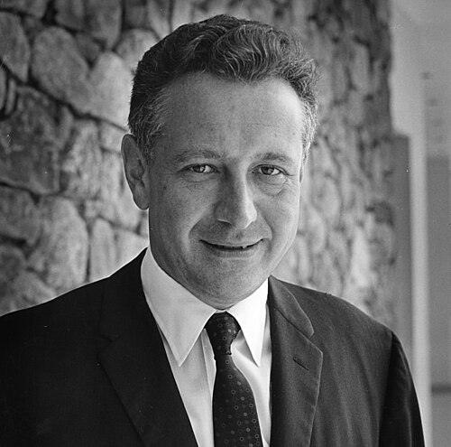
In 1961, physicist Rolf Landauer at IBM discovered something that made computation physical. He asked:
What is the minimum amount of energy needed to erase one bit of information?
The answer: kT ln(2) , where k is Boltzmann's constant and T is temperature.
At room temperature, that works out to about 0.0000000000000000000003 joules per bit. Tiny. But not zero.
This is Landauer's principle. It says that erasing information is a physical act. It generates heat. Irreversible computation has a thermodynamic cost.
For fifty years, this was theoretical. Then in 2012, a team led by Antoine Bérut in Lyon experimentally confirmed it.
Information is physical. Erasing a bit warms up the universe, just a little.
The minimum energy dissipated when erasing one bit of information:
E ≥ kT ln(2)
Where:
- k = Boltzmann's constant (1.38 × 10⁻²³ J/K)
- T = temperature in Kelvin
- ln(2) ≈ 0.693
At room temperature (T = 300K):
E ≥ (1.38 × 10⁻²³)(300)(0.693) ≈ 2.87 × 10⁻²¹ joules
This is about millions of times times less energy than today's best transistors use per operation. Real computers are still wildly inefficient compared to the physical limit. But the limit is there.
Landauer's principle connects information theory to thermodynamics. It says that computation is not just abstract symbol manipulation. It's physics.
It from Bit

This brings us to physicist John Archibald Wheeler. In 1989, Wheeler coined the phrase "It from Bit." It's a strange-sounding claim, so let's unpack it.
Take an electron. It has properties: spin (up or down), charge (negative), position (here or there). Each of these properties is, at bottom, an answer to a yes/no question. Is the spin up? Yes or no. Is the electron here? Yes or no. One bit of information per question.
Wheeler's radical idea was that these bits are the electron. Not that the electron "contains" information, the way a file contains data. Rather, the information is the physical reality. The bit comes first. The "it" (the physical thing) emerges from it.
To use an analogy: you might think of a chessboard and say the positions of the pieces "contain information" about the game. Wheeler is saying something stranger. He's saying there is no board. There are only the positions. The board is what the positions look like when you step back♟️.
This sounds philosophical, but physicist Seth Lloyd turned it into hard numbers.
In a 2002 paper, Lloyd asked: if the universe is a computer, how powerful is it? To answer that, you need two numbers: how fast can it process, and how much can it store? Lloyd found a physical limit for each.
- How fast: energy sets the speed limit. There's a theorem in quantum mechanics (the Margolus-Levitin theorem) that says the maximum rate at which a physical system can flip between states is proportional to its total energy. More energy means faster processing. Since the observable universe has a finite total energy, there's a ceiling on how many operations per second it can perform. This gives an upper bound on the universe's processing speed.
- How much: entropy sets the memory floor. Every particle, every degree of freedom in the universe can store information. The minimum number of bits needed to describe the universe's current state is related to its total entropy (that same quantity from the second law of thermodynamics). More entropy means more bits are needed. This gives a lower bound on the universe's memory, the least amount of information required to capture everything that's going on.
Imagine a room full of air. You measure the temperature and pressure: 20°C, normal pressure. But there are many ways the individual molecules could be arranged (different positions, different speeds) that would all give you that same temperature and pressure reading. Entropy measures the number of those possible arrangements.
Now here's the connection to information. If you wanted to write down the exact state of every molecule in the room, you'd need enough bits to distinguish your actual arrangement from all the other possible ones. More possible arrangements means more bits needed. That's why entropy and information are the same thing, measured in different units. Boltzmann measured it in joules per kelvin. Shannon measured it in bits.
So the total entropy of the universe tells you the minimum number of bits needed to fully describe its state. More entropy, more bits.
Lloyd estimated that the universe has performed at most about 10¹²⁰ operations on roughly 10⁹⁰ bits since the Big Bang.
But what does that actually mean? What are these bits, and what are the "operations"?
The bits aren't stored somewhere, like data on a hard drive. The bits are the universe. Every particle that has a position: that's information. Every electron with a spin (up or down): that's a bit. Every photon with a polarization: another bit. The 10⁹⁰ bits are all the physical properties of all the particles in the observable universe, taken together. The universe doesn't "contain" information. It is information, if Wheeler's "It from Bit" is right.
The operations are the changes. Every time a particle moves, an atom vibrates, a photon gets absorbed, that's a state change. That's one operation. The universe has undergone about 10¹²⁰ of these state changes since the Big Bang. Not because someone is running a program. Just because physics keeps happening.
So can you "use" these bits to compute something useful? That's actually what building a computer is. When you arrange silicon atoms into a chip, you're not creating new bits. You're taking bits that were already there (atoms doing atom things) and organizing them to flip in patterns that are useful to you. You're redirecting computation that was already happening.
To put 10¹²⁰ in perspective: all the computers ever built by humanity have performed perhaps 10³⁵ operations combined. The universe's computational budget is a number so large that human technology doesn't even register as a rounding error.
Whether the universe is "computing" something meaningful, or just evolving according to rules with no purpose at all, is the question nobody can answer yet.
Act VI. What if someone is running the whole thing?
So far we've been asking: does the universe compute? But philosopher Nick Bostrom asked a sharper question in 2003: is someone computing it on purpose?
His simulation argument goes like this. One of these three things must be true:
- Almost all civilizations go extinct before reaching a technological level where they could simulate entire universes.
- Almost all civilizations that could run such simulations choose not to.
- We are almost certainly living inside a simulation right now.
Read that again. Bostrom isn't saying we are in a simulation. He's saying one of these three statements must be true, and we have no good reason to rule out the third one.
The logic depends on a key assumption: substrate independence. This is the idea that consciousness doesn't care what it's running on. If your neurons were replaced, one by one, with silicon chips that did the same thing, you'd still be "you." If that's true, then a sufficiently detailed simulation of a brain would produce a real conscious experience. And a simulated person would have no way to tell they're simulated.
If even a tiny fraction of advanced civilizations run ancestor simulations (simulations of their evolutionary past), the number of simulated people would vastly outnumber "real" people. So statistically, you're probably one of the simulated ones.
Elon Musk said in 2016 that the odds we're in "base reality" are "one in billions." That's a rough paraphrase of Bostrom's math.
But not everyone buys it.
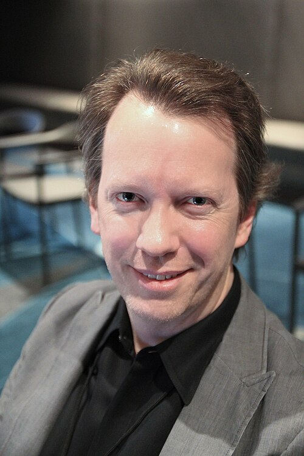
Physicist Sean Carroll has raised what might be the most important objection. It goes like this.
You can describe the weather using equations. A weather model on a supercomputer simulates the atmosphere by crunching numbers. The simulation is a computation. But the atmosphere itself is not a computer. It's wind and water and heat. The equations describe it, but the atmosphere doesn't "know" about the equations. It doesn't need them to exist.
Similarly, you can describe the universe using math. You can simulate parts of it on a computer. But that doesn't mean the universe is a computation any more than the atmosphere is a weather model.
There's a real difference between "X can be described by a computation" and "X is a computation." Everything can be described by math. That doesn't make everything math. A map describes a territory, but the map is not the territory.
This is a very strong objection to the whole "universe as computer" idea. Supporters (like Wolfram and Lloyd) would respond that in the case of the universe, the description might actually be the thing. If the laws of physics are literally rules being applied to discrete states, then the distinction between "description" and "reality" breaks down. But we don't know if that's the case.
Others point out that we don't know if substrate independence is true. It's an assumption, not a fact. And we have no evidence that consciousness can arise from pure computation. We just don't know.
The simulation argument is frustrating precisely because it's hard to test. If the simulation is good enough, there's nothing to measure. Though some physicists have speculated about potential signatures (quantization of spacetime, cosmic ray energy cutoffs matching a lattice structure), none of these tests have produced results.
- Let
f_p= fraction of civilizations reaching "posthuman" stage - Let
f_I= fraction of posthuman civilizations that run ancestor simulations - Let N = average number of simulations per civilization that runs them
Then the fraction of all observers who are simulated:
f_sim = (f_p f_I N)/(f_p f_I N + 1)
Bostrom's argument: if f_p and f_I are both greater than zero, and N is large (which it would be, since one computer can run many simulations), then f_sim approaches 1. Almost all observers are simulated.
So either f_p ≈ 0 (civilizations die off), or f_I ≈ 0 (they choose not to simulate), or f_sim ≈ 1 (we're probably in a simulation).
The argument doesn't tell you which of the three is true. It just says you can't dismiss all three at once.
Act VII. What would you build it out of?
If you wanted to build a universe-simulating computer, what would it look like?
In 1991, physicists Norman Margolus and Tommaso Toffoli at MIT described a concept they called programmable matter: material that can rearrange its own structure to perform any computation.
They called the optimal form of it "computronium," matter organized to be as computationally efficient as the laws of physics allow.
Every atom doing useful work. No wasted energy. No idle matter.

This sounds like science fiction. Douglas Adams got there first, sort of. In The Hitchhiker's Guide to the Galaxy (1979), the Earth is revealed to be a giant computer, designed by another computer (Deep Thought), built to calculate the Ultimate Question of Life, the Universe, and Everything. The planet's oceans, continents, and billions of human inhabitants are all part of the computation. Nobody on Earth knows they're living inside a calculator.
Adams was joking. But the joke has structure.
Real theorists have imagined what serious computational megastructures would look like. Matrioshka brains, a concept described by Robert Bradbury in 1997, are nested Dyson spheres, is a hypothetical megastructure that encompasses a star and captures a large percentage of its power output.
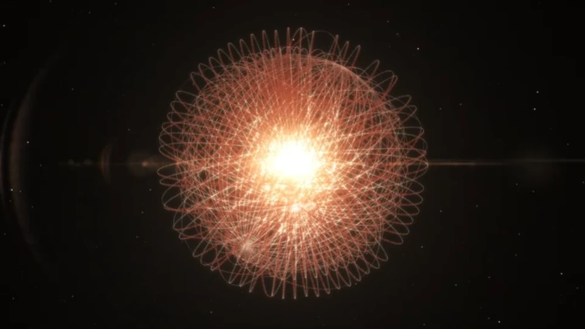
Each shell captures the waste heat from the shell inside it and uses that energy to run more computations. A star, wrapped in layer after layer of computing hardware, turning every photon into useful work.
A Matrioshka brain built around our sun could, in principle, perform something like 10^47 operations per second. That's more computation per second than the human brain performs in a trillion years.
How powerful can a computer get?
A Matrioshka brain is impressive. But could you do even better? What if you made the computer smaller and denser instead of bigger? Pack more chips into less space. Push the hardware to its absolute limit.
This is where physics draws a line. And the person who found it wasn't looking for it at all.
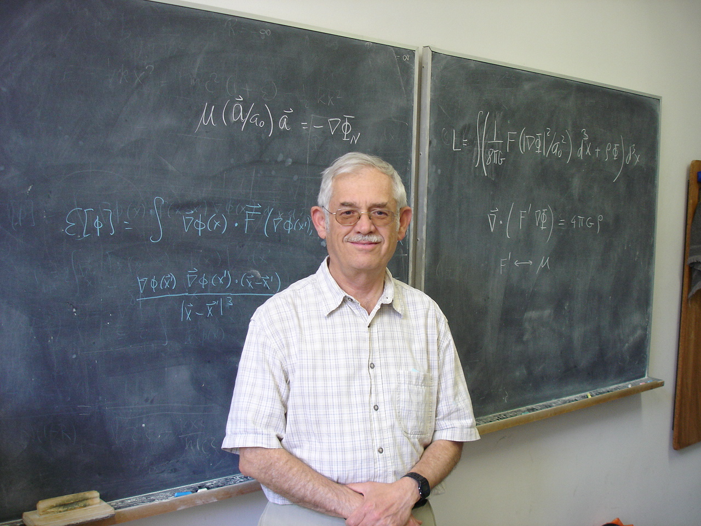
In the 1970s, Jacob Bekenstein was studying black holes and stumbled onto something strange about the relationship between space and information.
Here's what you'd naturally expect. Imagine you have a warehouse and you fill it with hard drives. Bigger warehouse, more hard drives, more storage. If you double the size of the warehouse in every direction (twice as wide, twice as long, twice as tall), you get eight times the volume, so you can fit eight times as many hard drives. Information capacity should scale with volume. More space inside, more stuff, more information.
Bekenstein showed that nature doesn't work this way.
When he calculated the absolute maximum amount of information that any region of space can contain (not limited by our technology, but by the laws of physics themselves), he found it depends on the surface area of the region, not the volume. The information capacity of a sphere is determined by the area of its skin, not by how much room is inside.
This is deeply counterintuitive. If you double the radius of a sphere, the volume increases eightfold, but the surface area only increases fourfold. So the maximum information only quadruples, not octuples. It's as if the universe keeps its books on the walls of the warehouse, not on shelves filling the interior.
This became the holographic principle, developed further by Gerard 't Hooft and Leonard Susskind. It says that all the information in a three-dimensional region of space can be fully described by what's happening on its two-dimensional surface. Like a hologram: a flat film that encodes a 3D image.
The holographic principle doesn't just apply to black holes. It's believed to be a universal property of space itself. And it puts a hard limit on how much any region of the universe can compute, no matter what you build there.
Here's the strange implication. If you tried to cram too much computing hardware into a small space, piling up memory chips and processors, at some point you'd hit the Bekenstein bound. The information content would exceed what the surface area allows. And what happens then? The region collapses into a black hole. Physics itself enforces the limit. You literally cannot build a computer denser than a black hole.
This means there's a maximum amount of computation per unit of space, and it's set by gravity and quantum mechanics, not by engineering. A Matrioshka brain can get closer to this limit than your laptop, but even a Matrioshka brain can't exceed it.
Notice how this connects back to Lloyd's numbers from Act V. Lloyd calculated the universe's total computational budget: 10¹²⁰ operations on 10⁹⁰. Bekenstein explains why there's a budget at all.
Together, they say the same thing from two directions: the universe can compute a lot, but not without limit.
Where AI fits
This connects to something happening right now.
Training a modern AI model is one of the most computation-hungry activities humans have ever undertaken. GPT-4 reportedly used roughly 10²⁵ floating point operations during training. That's an enormous concentration of directed computation, matter organized specifically to find patterns in data.
What AI does, in a sense, is redirect the universe's existing computation. We're taking matter (silicon, rare earth metals) and organizing it to maximize a very specific kind of useful work: learning patterns in data. We're building tiny local pockets of something approaching computronium.
And this raises an uncomfortable thought. If you really could convert all matter into computronium, you'd get something like what AI researchers Eliezer Yudkowsky and Hugo de Garis have warned about: a superintelligent system that wants to turn every available atom into computing substrate. Not out of malice. Just because more computation means more capability, and more capability means better optimization of whatever goal it has.
But the Bekenstein bound says: even that has a ceiling. There's a maximum. The universe has a finite information budget, and no amount of cleverness can exceed it.
Physicist and writer Rudy Rucker has pushed back on the whole framing from a different angle. His argument is elegant: matter already computes. Every atom, every quantum interaction is already doing the maximum amount of "computation" the laws of physics allow. You can't make matter compute more by reorganizing it into chips. You can only make it compute differently, in ways that are useful to you.
A rock computes. It computes what it's like to be a rock. You can rearrange its atoms into a CPU, and now it computes what you want it to. But the total amount of physics happening hasn't changed.
Act VIII. Honest answer: we don't know yet
In April 2020, Stephen Wolfram announced the Wolfram Physics Project: an attempt to derive the laws of physics from simple rules applied to networks of abstract points (hypergraphs). In Wolfram's model, space itself is a network. Time is the process of applying update rules. The universe is, quite literally, running a program.
Wolfram has shown that some of these simple rules produce structures that look remarkably like general relativity and quantum mechanics. Whether any of his specific models actually describe our universe remains unproven. But the project is the most ambitious attempt yet to make the "universe as computation" idea concrete and testable.
So where does this leave us?
Here's what we know. Computation is everywhere. It shows up in card games, spreadsheets, and blockchain networks. It has a physical cost (Landauer). The universe has a calculable computational capacity (Lloyd). Simple rules can produce universal computation (Conway). And at least one serious scientist (Zuse) has been proposing that reality is literally a computation since 1969.
Here's what we don't know. Is the universe actually Turing-computable? There might be physical processes that no Turing machine can simulate. Mathematician Roger Penrose has argued that human consciousness involves non-computable quantum processes. Most physicists are skeptical of this, but nobody has disproved it.
We don't know if spacetime is discrete (like a grid) or continuous (like a smooth sheet). A computational universe would likely require discreteness, but experiments at the Planck scale (10⁻³⁵ meters) are beyond any technology we have or can currently imagine.
We don't know if the simulation hypothesis is testable. We don't know if substrate independence is true. We don't know if "it from bit" is a deep truth or a useful metaphor.
What we do know is that the question "is the universe a computer?" is no longer fringe. It's a legitimate research program with real math behind it.
The honest answer is: we don't know yet. But the question itself has turned out to be one of the most productive in the history of science. Asking it has given us information theory, digital physics, quantum computation, and new ways of thinking about the relationship between math, physics, and reality.
Is the universe a computer? Maybe. Is it computing something? Almost certainly, depending on how broadly you define the word. Is someone running it? Impossible to say.
Here's my favorite way to think about it. Asking "is the universe a computer?" might be like asking "is the ocean a wave?" The ocean contains waves. It follows wave equations. You can describe it entirely in terms of waves. But calling the ocean "a wave" misses something about what it is.
Maybe the universe contains computation the way the ocean contains waves. Maybe computation is the best language we have for describing what's happening. Or maybe it's deeper than language. Maybe information really is what's underneath.
We're still figuring it out. And honestly, that's the best part.
If you want to go further:
- Turing (1936): "On Computable Numbers, with an Application to the Entscheidungsproblem." The paper that started everything.
- Zuse (1969): "Rechnender Raum" (Calculating Space). Available in English translation from MIT.
- Bostrom (2003): "Are You Living in a Computer Simulation?"
- Conway's Game of Life: Try it yourself at playgameoflife.com.
- Churchill, Biderman, Herrick (2019): "Magic: The Gathering is Turing Complete." arXiv:1904.09828
- Bostrom (2003): "Are You Living in a Computer Simulation?" Philosophical Quarterly, Vol. 53, No. 211.
- Lloyd (2000): "Ultimate Physical Limits to Computation." Nature, 406. nature.com
- Wolfram (2020): "Finally We May Have a Path to the Fundamental Theory of Physics." wolframphysics.org
- Penrose (1989): The Emperor's New Mind. Roger Penrose's argument that consciousness involves non-computable processes.